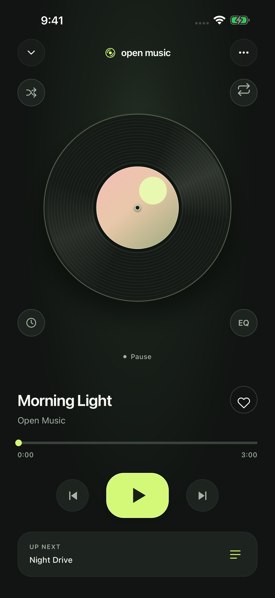

شغّل أول أغنية
- احفظ مجلدًا يحتوي على ملفاتك الصوتية في تطبيق «الملفات» (Files). إذا كانت الملفات في السحابة، نزّلها إلى الجهاز قبل الاستماع دون اتصال.
- افتح Open Music Player → Settings → Add folder، واختر المجلد ثم أكّد. لإضافة ملفات منفردة، اختر Add files.
- افتح My music واضغط على الأغنية. اضغط على المشغّل المصغّر لفتح شاشة الأسطوانة.
أسماء الأزرار هنا باللغة الإنجليزية لتسهيل العثور عليها. هذه ترجمة للدليل؛ لا نعلن عن واجهة عربية داخل التطبيق.
اختر المظهر الذي يناسبك
من Settings اختر Light vinyl أو Graphite & lime. يتغيّر مظهر التطبيق مع المشغّل.

الموسيقى على الكمبيوتر؟
يمكنك نقل ملفاتك باستخدام Finder على Mac أو Apple Devices على Windows، ثم إضافتها من إعدادات التطبيق. خطوات النقل بالإنجليزية.
احتفظ بنسخة احتياطية؛ حذف التطبيق يحذف الملفات المخزّنة داخل مجلده.